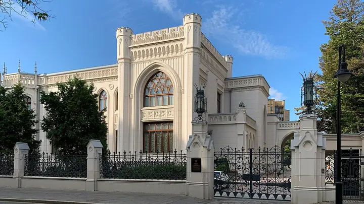

Фото: Vzorets, CC BY-SA 4.0 · Wikimedia Commons
Особняк · ЦАО
Особняк Зинаиды Морозовой
Неоготический особняк, похожий на английский замок, с интерьерами по эскизам Врубеля; красивая точка для прогулки по Спиридоновке.
- ₽ · до 1 500 ₽ на человека
- Новое в каталоге
- в 3 планах
Позвать сюда: Особняк Зинаиды МорозовойОткрыть в каталоге: Особняк Зинаиды МорозовойМаршрут до места: Особняк Зинаиды Морозовой
Адрес и детали
- Адрес
- ул. Спиридоновка, 17
Открыть на Яндекс Картах (в новой вкладке) - Метро
- м. Баррикадная
- Округ
- Центр (ЦАО)
- Цена
- до 1 500 ₽ на человека
- Проверено
- работает — проверили в ноябре 2026
Планы с этим местом 3
- Особняк Зинаиды Морозовой · Особняк · м. Баррикадная
- 5 минут пешкомПатриаршие пруды · Пруд и сквер
- 4 минуты пешкомThe Bix · Джаз-бар
В сумерках особняк с башнями выглядит особенно загадочно. Оттуда пять минут до пруда и ещё столько же до джаз-бара, где вечер продолжается под живую музыку.
Открыть план: Готика, пруд и джазПозвать сюда: Готика, пруд и джаз
Фото: Vzorets, CC BY-SA 4.0 · Wikimedia Commons
- Особняк Зинаиды Морозовой · Особняк · м. Баррикадная
- 5 минут пешкомПатриаршие пруды · Пруд и сквер
- 2 минуты пешкомI love cake · Кондитерская
Рассмотреть неоготический особняк, за четыре минуты дойти до Патриарших и сделать круг у воды, а потом вернуться на десерт в кондитерскую рядом.
Открыть план: Замок на Спиридоновке и прудПозвать сюда: Замок на Спиридоновке и пруд
Фото: Vzorets, CC BY-SA 4.0 · Wikimedia Commons
- Особняк Зинаиды Морозовой · Особняк · м. Баррикадная
- 6 минут пешкомДом-музей Чехова · Музей
- 11 минут пешкомMátes · Кофейня
Два дома с историей в пяти минутах друг от друга: снаружи замок Морозовой, внутри скромный быт писателя. После музея — кофе неподалёку, чтобы обсудить увиденное.
Открыть план: Особняк и дом ЧеховаПозвать сюда: Особняк и дом Чехова
Фото: Vzorets, CC BY-SA 4.0 · Wikimedia Commons

Похожие рядом


Что ещё рядом
Как позвать
- Выбери план, место или событие — в карточке адрес, цены и маршрут в Яндекс Картах.
- Нажми «Позвать сюда» — соберётся приглашение-игра для свидания или голосование для компании.
- Отправь ссылку в любой мессенджер: тебе ответят, а компания отметит, куда и когда может. Бесплатно и без регистрации.